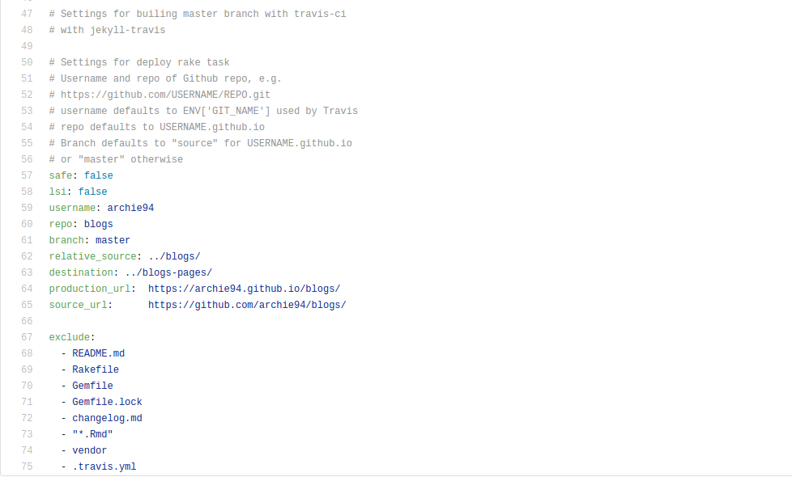
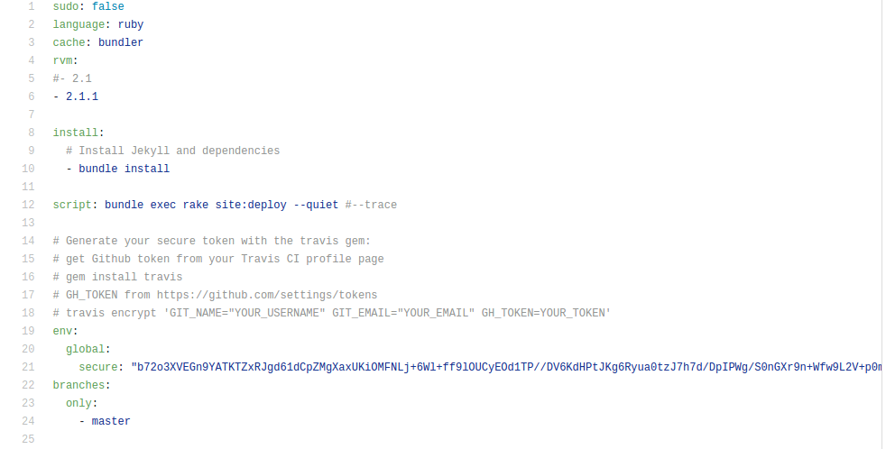

If your blog is a fork of Jasper and you host it in github then you might have noticed that author pages and tag pages returns 404 error. The reasion as mentioned in this issue is that Github restricts running plugins for security reasons. Fábio Madeira describes two workaround for this issue and here I am going to describe the second one.
Firstly in _config.yml we need to specify which repository we wish to build with travic-ci with the travis gem. The git url in github for any repository is of the form https://github.com/USERNAME/REPO.git.
- Change username to your github username,
- repo to the name of the repository (for me it is blogs),
- branch to the name of the branch from which you want to build your project (I have kept it master),
- relative source is the path to your project w.r.t. the configuration file (since configuration file is mostly at the root of the project it will be
../PROJECT_NAME/) and - destination path where travis-ci will clone your project.
- After this change the production_url (for hosting in github it is
https://USERNAME.github.io/REPO) and - source_url (again should be of the form
https://github.com/USERNAME/REPO/).

Now we need to create the .travis.yml file. Follow this to get started. Keep the ruby version to which you are using in your project. After this we need to generate a secure key with travis gem. First get your Github token from your Travis CI profile page.
gem install travis
travis encrypt 'GIT_NAME="YOUR_USERNAME" GIT_EMAIL="YOUR_EMAIL" GH_TOKEN=YOUR_TOKEN'
GIT_NAMEis your Github username,- Obtain
GH_TOKENfromhttps://github.com/settings/tokens.
Add the secure key and specify the branch from where to build your project. Should look something like this:

Travis CI should build from your specified branch every time you push after this setup!
After successful build got to https://USERNAME.github.io/REPO and see this time the author page and tag pages should work fine.